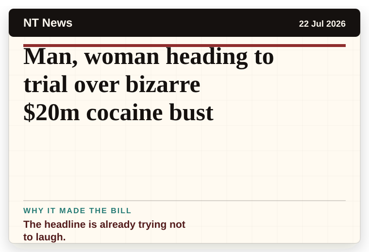
NT News
Australia
Man, woman heading to trial over bizarre $20m cocaine bust
The headline is already trying not to laugh.
The latest daily picks, linked back to the original sources. Search the room, pick a source, or follow a headline out to the full story.
Record updated: 23 Jul 2026, 07:53 AM AEST
Showing 18 headline candidates from the refresh run completed on 23 Jul 2026, 07:53 AM AEST.

The headline is already trying not to laugh.
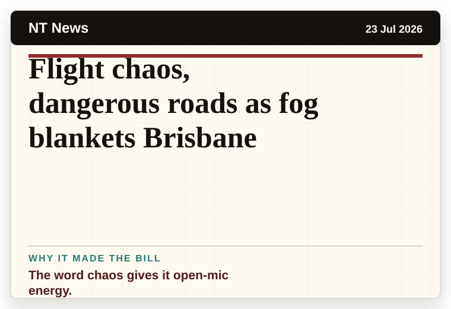
The word chaos gives it open-mic energy.
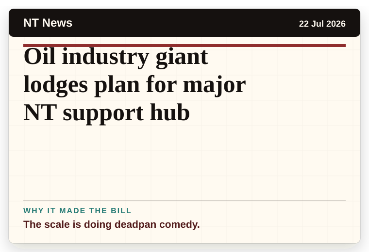
The scale is doing deadpan comedy.
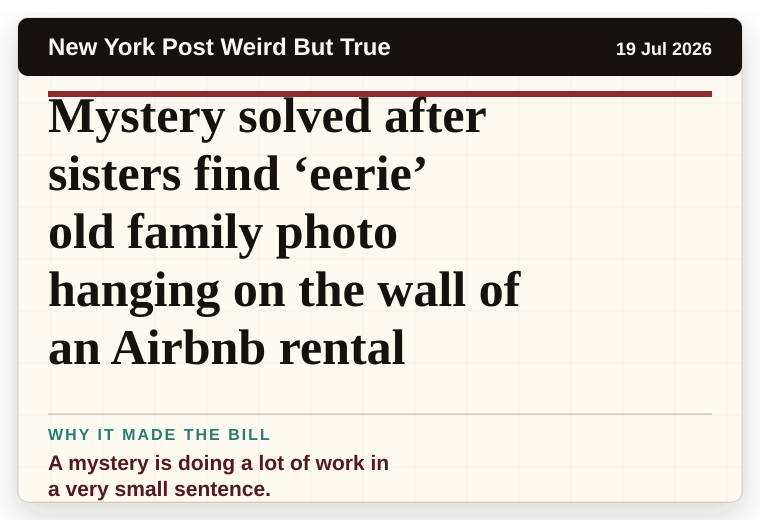
A mystery is doing a lot of work in a very small sentence.
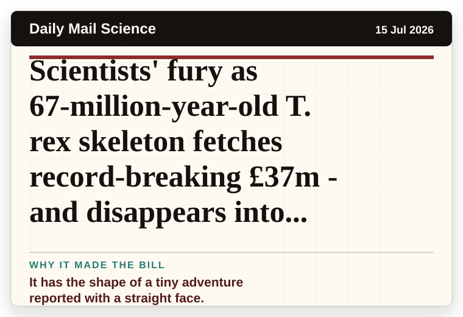
It has the shape of a tiny adventure reported with a straight face.
The second half quietly trips over the first half.
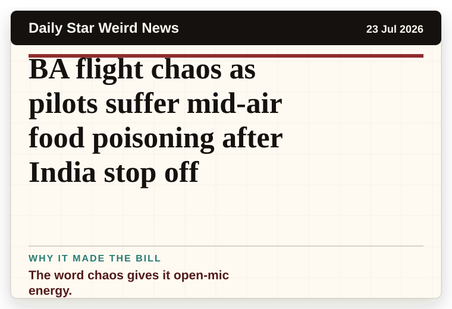
The word chaos gives it open-mic energy.
The scale is doing deadpan comedy.
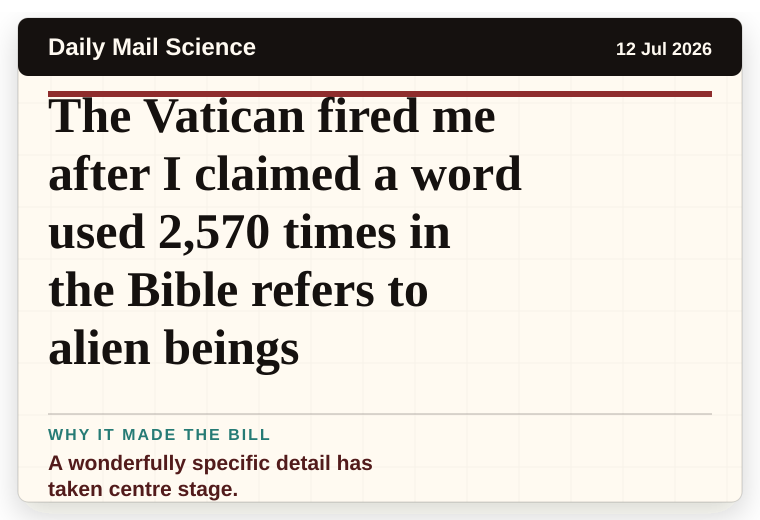
A wonderfully specific detail has taken centre stage.
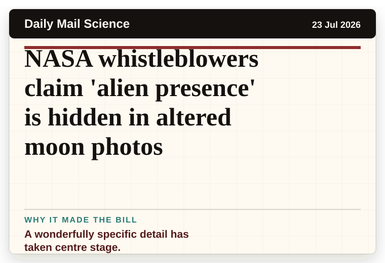
A wonderfully specific detail has taken centre stage.
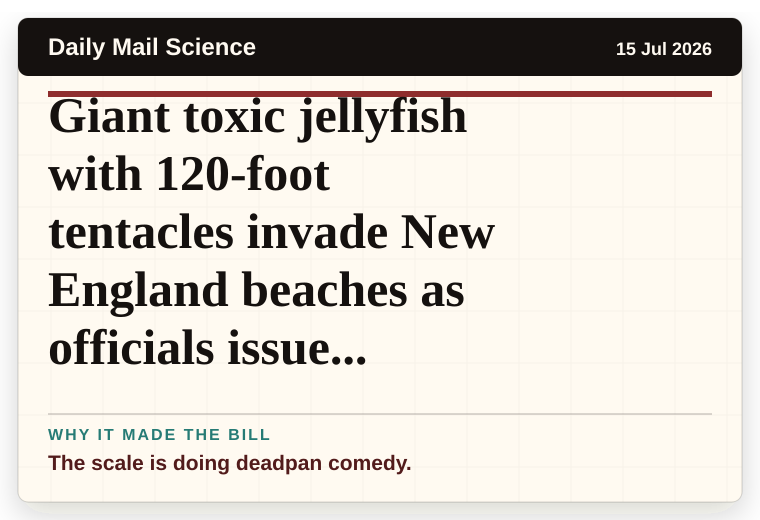
The scale is doing deadpan comedy.
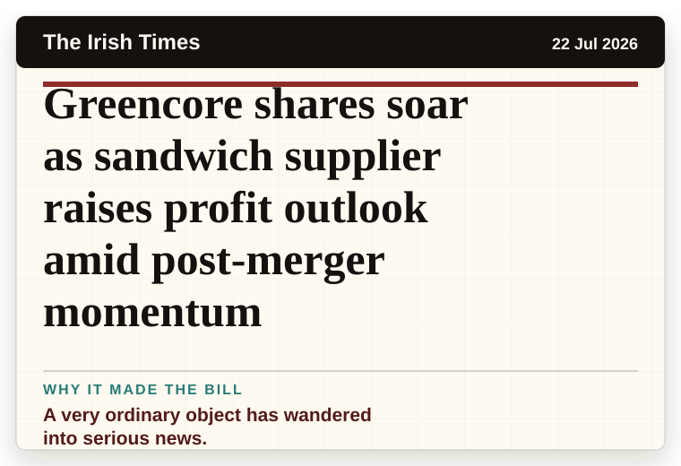
A very ordinary object has wandered into serious news.
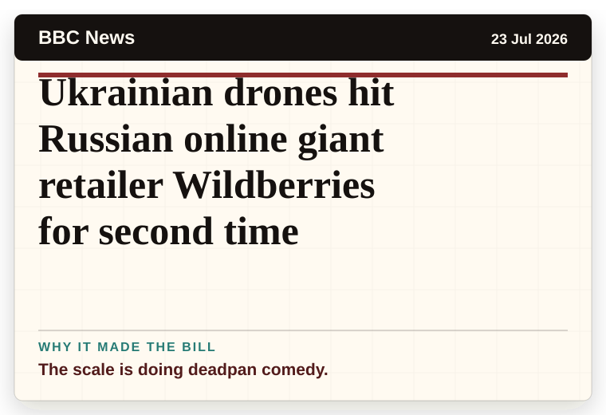
The scale is doing deadpan comedy.
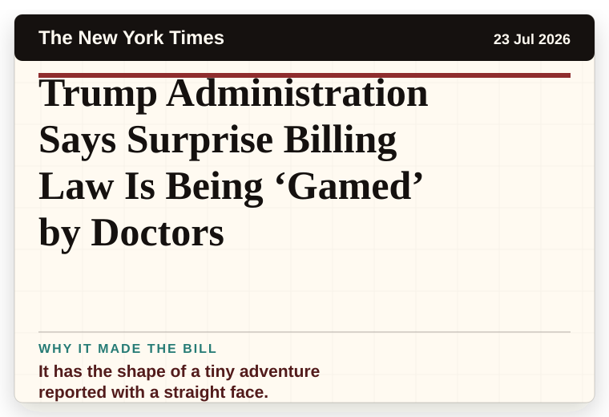
It has the shape of a tiny adventure reported with a straight face.
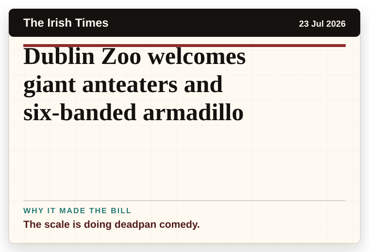
The scale is doing deadpan comedy.
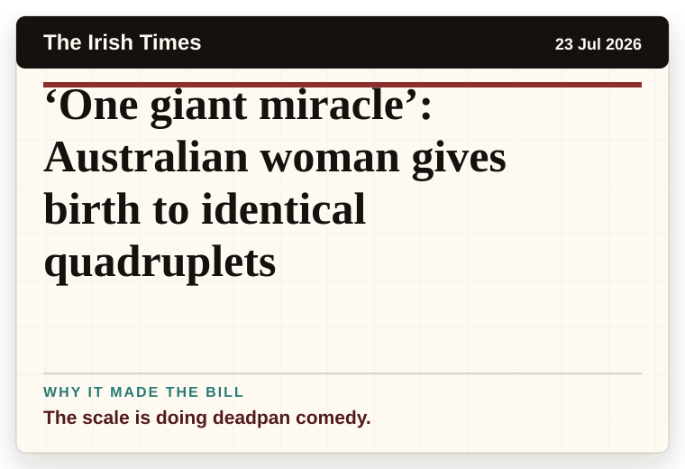
The scale is doing deadpan comedy.
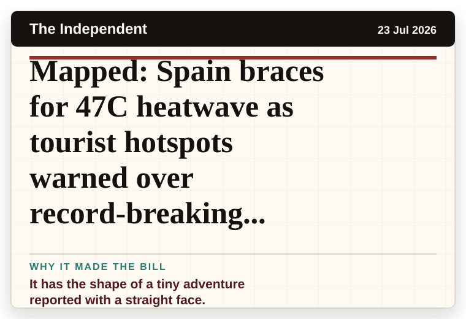
It has the shape of a tiny adventure reported with a straight face.
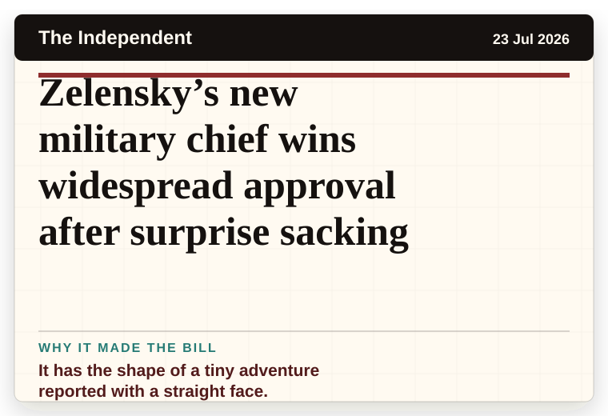
It has the shape of a tiny adventure reported with a straight face.